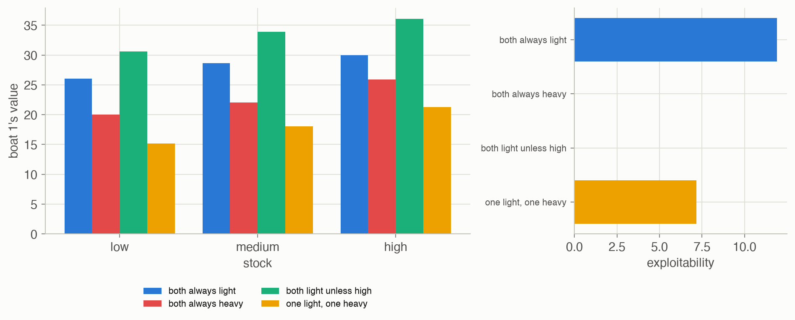
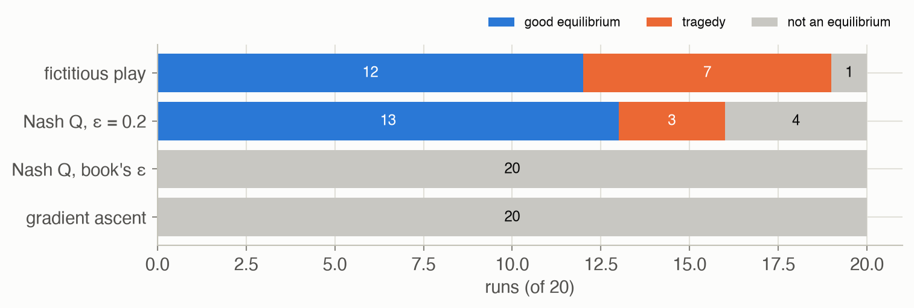
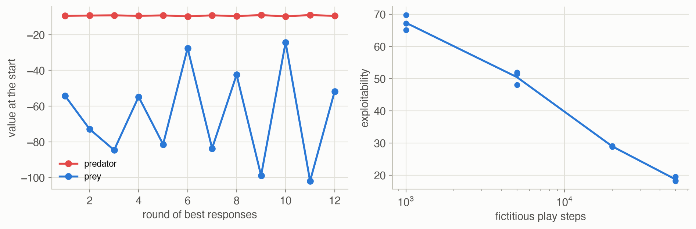

25 · Sequential Problems
Part V — Multiagent Systems
Big picture
Where this chapter fits
Chapter 24 had agents meet once, with no state. Here they interact over time in a changing world: a Markov game (also called a stochastic game) is an MDP (Chapter 7) with several agents, each with its own reward, whose joint action moves a shared state. The ideas of Chapter 24 carry over, with values in place of one-shot rewards: best responses become MDPs, and equilibria become joint policies over states. Chapter 26 removes the assumption that everyone sees the state.
The question: when several agents act repeatedly in a shared, changing world, what are sensible joint policies, and how do agents find them?
The short answer: fix the others and you have an MDP; ask everyone to be at a best response at once and you have a Nash equilibrium; let them learn from play and they may reach one, or not.
- Policy evaluation of a joint policy is a linear solve, one value function per agent.
- Best response: with the others’ policies fixed, an agent faces an MDP.
- Nash equilibria exist for every finite discounted game, can be found by nonlinear programming, and there may be several.
- Learning: fictitious play, gradient ascent and Nash Q-learning adapt policies from experience.
The key ideas at a glance
A Markov game has states \(\mathcal{S}\), agents with action sets \(\mathcal{A}^i\), a transition model \(T(s' \mid s, \boldsymbol{a})\) driven by the joint action, and a reward \(R^i(s, \boldsymbol{a})\) for each agent. Each agent’s policy \(\pi^i(a^i \mid s)\) depends on the current state.
Evaluation is an MDP calculation. With every policy fixed, the state moves as a Markov chain, and each agent’s value \(U^{\boldsymbol{\pi}, i}(s)\) solves its own linear Bellman equation.
A best response is an MDP. Hold the others’ policies fixed: they become part of the environment. Solving that MDP (Chapter 7) gives agent \(i\)’s best response.
Nash equilibria. A joint policy where every agent’s policy is a best response, in every state. Every finite discounted Markov game has one (A. M. Fink, 1964), possibly several, with very different values: our lake has a sustainable one and a tragic one.
Learning. Agents can adapt from experience: fictitious play best-responds to the others’ observed frequencies in each state; gradient ascent nudges policies along learned action values; Nash Q-learning learns joint action values and plays the equilibrium of each state’s “stage game”. Which equilibrium they reach, if any, depends on chance and on how they explore.
Vocabulary
| Term | Plain meaning |
|---|---|
| Markov game (stochastic game) | An MDP with several agents, each with its own reward |
| Joint policy \(\boldsymbol{\pi}\) | Every agent’s state-dependent policy |
| Best response | An agent’s optimal policy when the others’ policies are fixed |
| Exploitability | The most any agent could gain, in any state, by switching to its best response |
| Stationary Nash equilibrium | A joint policy with zero exploitability |
| Stage game | The simple game played in one state, with values in place of rewards |
| Fictitious play | Best-respond to the others’ observed action frequencies in each state |
| Nash Q-learning | Q-learning on joint actions, valuing next states by stage-game equilibria |
After this chapter you can
- Write down a Markov game, and evaluate any joint policy by solving linear equations.
- Compute a best response by building and solving the MDP the other agents induce.
- Check whether a joint policy is a Nash equilibrium, and find equilibria by nonlinear programming or enumeration.
- Run fictitious play, gradient ascent and Nash Q-learning, and judge the result by its exploitability.
- Explain why several equilibria can exist, and why learning may land on the worse one.
Intuition
TipAnalogy
Two fishing boats share a lake. Each day each can fish lightly or heavily. Fishing heavily fills today’s hold, but if both do it every day the fish population collapses and both are poorer for years. It’s the prisoner’s dilemma of Chapter 24, except that today’s choices change tomorrow’s lake. That’s what makes the sequential version interesting: a boat that overfishes today pays for it later, so the long view can make restraint pay.
We use two games. The lake is this site’s problem (problem gallery): the stock is low, medium or high; light fishing catches 1, 2 or 3 and heavy fishing 2, 3.5 or 5; the stock grows if both fish lightly and shrinks if both fish heavily. The predator-prey hex world (Appendix F.13, gallery) has a predator chasing a prey across 12 hexagonal tiles.
Every agent has its own value
If both boats always fish lightly, the lake stays full and each boat earns 30.0 from a high stock. If both always fish heavily, each earns only 25.9. These values come from the same linear equations as MDP policy evaluation, one set per boat. See Equation 1.
Fix the others, and it’s an MDP
If boat 2 always fishes lightly, boat 1’s best response is to fish heavily at a high stock and lightly otherwise, worth 41.9 from high. The other boat’s restraint is just part of boat 1’s environment. See Equation 2.
Several equilibria, one tragic
Trying all 64 deterministic joint policies finds exactly two Nash equilibria. In one, both fish lightly unless the stock is high, worth 36.1 each from high: this is also the best the two could do as a team. In the other, both always fish heavily, worth 25.9. Neither boat can do better alone in either one. See Equation 3.
Learning finds one, or none
Two boats learning by fictitious play reached the sustainable equilibrium in 12 of 20 runs and the tragic one in 7. In the predator-prey game, best responses chase each other in circles, while fictitious play slowly settles: the most either agent could gain by switching fell from 67 after 1,000 steps to 19 after 50,000. See Equation 4 and Equation 5.
Formalism
Markov games and policy evaluation
A Markov game (ADM §25.1; L. S. Shapley, PNAS, 1953) has states \(\mathcal{S}\), agents \(\mathcal{I}\) with actions \(\mathcal{A}^i\), transitions \(T(s' \mid s, \boldsymbol{a})\) and rewards \(R^i(s, \boldsymbol{a})\). Under a joint policy with \(\pi^j(a^j \mid s)\), the expected reward and transitions are averages over joint actions, \(R^i(s, \boldsymbol{\pi}(s)) = \sum_{\boldsymbol{a}} R^i(s, \boldsymbol{a}) \prod_j \pi^j(a^j \mid s)\) and likewise for \(T\), and agent \(i\)’s value satisfies
\[ U^{\boldsymbol{\pi}, i}(s) = R^i\big(s, \boldsymbol{\pi}(s)\big) + \gamma \sum_{s'} T\big(s' \mid s, \boldsymbol{\pi}(s)\big)\, U^{\boldsymbol{\pi}, i}(s') \tag{1}\]
In words. Each agent’s value is its expected reward now plus the discounted value of where the joint policy takes the state.
Term by term.
- \(R^i(s, \boldsymbol{\pi}(s))\) and \(T(s' \mid s, \boldsymbol{\pi}(s))\) average over joint actions, weighting each by \(\prod_j \pi^j(a^j \mid s)\): the agents choose independently in each state.
- The equation is linear in \(U^{\boldsymbol{\pi}, i}\): \(U = (I - \gamma T_{\boldsymbol{\pi}})^{-1} R^i_{\boldsymbol{\pi}}\), one solve per agent.
- The agents share the state dynamics \(T_{\boldsymbol{\pi}}\) but not the rewards.
Why it holds. With every policy fixed, the state alone evolves as a Markov chain with rewards for each agent, and Equation 1 is that chain’s Bellman expectation equation (Chapter 7).
Best and softmax responses
With the others’ policies \(\boldsymbol{\pi}^{-i}\) fixed, agent \(i\) faces an MDP (ADM §25.2):
\[ T'(s' \mid s, a^i) = T\big(s' \mid s, a^i, \boldsymbol{\pi}^{-i}(s)\big), \qquad R'(s, a^i) = R^i\big(s, a^i, \boldsymbol{\pi}^{-i}(s)\big) \tag{2}\]
In words. Average the others’ actions into the environment, and solve the single-agent MDP that is left.
Term by term.
- \(T(s' \mid s, a^i, \boldsymbol{\pi}^{-i}(s))\) averages the transition over the others’ actions in state \(s\).
- Only agent \(i\)’s own reward \(R^i\) appears.
- Solving the MDP exactly (policy iteration) gives a deterministic best response.
- A softmax response takes this MDP’s optimal \(Q(s, a^i)\) and plays \(\pi^i(a^i \mid s) \propto \exp(\lambda Q(s, a^i))\).
Why it holds. When the others’ policies depend only on the current state, the rest of the world, including them, is Markov from agent \(i\)’s point of view.
Nash equilibrium
\[ U^{\boldsymbol{\pi}, i}(s) \ge U^{(\pi^{i\prime}, \boldsymbol{\pi}^{-i}), i}(s) \quad \text{for every agent } i, \text{ policy } \pi^{i\prime} \text{ and state } s \tag{3}\]
In words. In every state, no agent can do better by changing its own policy.
Term by term.
- The deviation \(\pi^{i\prime}\) can be any policy, but it’s enough to check the best response of Equation 2.
- Exploitability \(= \max_{i, s}\big(U^{*, i}(s) - U^{\boldsymbol{\pi}, i}(s)\big)\), where \(U^{*, i}\) is the value of agent \(i\)’s best response. It is 0 exactly at an equilibrium; the page uses it to check every result.
- Because policies here depend only on the state, these are stationary Markov perfect equilibria: no agent wants to deviate from any state, even ones the equilibrium rarely visits.
Why it holds. Every finite discounted Markov game has a stationary Nash equilibrium (A. M. Fink, 1964). As a computation, the book (ADM eq. 25.7, after J. A. Filar et al., 1991) minimizes \(\sum_{i,s} \big(U^i(s) - Q^i(s, \boldsymbol{\pi}(s))\big)\) subject to \(U^i(s) \ge Q^i(s, a^i, \boldsymbol{\pi}^{-i}(s))\), with \(Q^i(s, \cdot) = R^i(s, \cdot) + \gamma \sum_{s'} T(s' \mid s, \cdot) U^i(s')\); the minimum, 0, is attained exactly at equilibria. The page solves it with SciPy’s SLSQP, and checks the answer’s exploitability.
Learning in Markov games
Fictitious play (ADM §25.4) counts, in each state, how often each agent played each action, \(N(j, a^j, s)\), and best-responds to those frequencies:
\[ \hat{\pi}^j(a^j \mid s) \propto N(j, a^j, s), \qquad a^i = \arg\max_{a^i} Q^i\big(s, a^i, \hat{\boldsymbol{\pi}}^{-i}(s)\big) \tag{4}\]
In words. In each state, assume the others play as often as you’ve seen them play there, and act to maximize your action value against that.
Term by term.
- \(N(j, a^j, s)\) starts at 1 and grows each time \(j\) plays \(a^j\) in \(s\).
- \(Q^i(s, \boldsymbol{a})\) is agent \(i\)’s value of the joint action, computed from the known model: \(R^i(s, \boldsymbol{a}) + \gamma \sum_{s'} T(s' \mid s, \boldsymbol{a}) U^i(s')\), with \(U^i(s')\) the value of \(s'\) when everyone plays their frequencies.
- Only the state just visited is updated, as in asynchronous value iteration.
Why it holds. If the frequencies settle, each agent is best-responding to the others’ limiting policy in every visited state: an equilibrium on the states the play visits. There’s no general guarantee that they settle.
Gradient ascent (ADM §25.5) has each agent learn \(Q^i(s, \boldsymbol{a})\) by Q-learning, treating the others as if they will repeat their last actions, and step its policy at the visited state along \(Q^i(s, \cdot, \boldsymbol{a}^{-i})\), projected back onto the simplex.
Nash Q-learning (ADM §25.6; J. Hu and M. P. Wellman, JMLR, 2003) learns joint-action values for every agent. After a transition from \(s\) to \(s'\), it solves the stage game at \(s'\), the simple game with rewards \(Q^j(s', \cdot)\), for a Nash equilibrium \(\boldsymbol{\pi}'\), and updates
\[ Q^i(s, \boldsymbol{a}) \leftarrow Q^i(s, \boldsymbol{a}) + \alpha \Big( R^i(s, \boldsymbol{a}) + \gamma \sum_{\boldsymbol{a}'} Q^i(s', \boldsymbol{a}') \prod_j \pi^{j\prime}(a^{j\prime}) - Q^i(s, \boldsymbol{a}) \Big) \tag{5}\]
In words. Like Q-learning, but the next state is valued by the equilibrium of its stage game instead of by a maximum.
Term by term.
- \(\alpha = 1/\sqrt{N(s, \boldsymbol{a})}\) shrinks with the number of visits to the state and joint action.
- The sum is agent \(i\)’s value of the stage game at \(s'\) under its equilibrium \(\boldsymbol{\pi}'\).
- The agents act on the stage equilibrium at the current state, choosing a random action with probability \(\varepsilon\). The book uses \(\varepsilon = 1/\sum_{\boldsymbol{a}} N(s, \boldsymbol{a})\).
- When a stage game has several equilibria, all agents must pick the same one; the page takes the first one support enumeration finds.
Why it holds. If every agent’s \(Q\) were the equilibrium’s joint-action values, the stage equilibria would reproduce the equilibrium, and the update would leave \(Q\) unchanged. Convergence is proved only under strong conditions on the stage games (Hu and Wellman), which the lake does not guarantee.
Worked example
Why “both always light” isn’t an equilibrium
If both boats always fish lightly from a high stock, the stock stays high (it grows or stays, and can’t exceed high), so each boat earns 3 per day forever: \(3/(1 - 0.9) = 30\). Now let boat 1 deviate once, at a high stock, and fish heavily, then go back to light fishing. Today it catches 5. With one heavy boat, the stock rises or stays with probability \(0.2 + 0.5 = 0.7\) (still high), and falls to medium with probability 0.3:
\[ 5 + 0.9\,\big(0.7 \times 30 + 0.3 \times U(\text{medium})\big), \qquad U(\text{medium}) = 28.63 \]
That’s 31.63, more than 30. One day of heavy fishing pays, so restraint everywhere is not an equilibrium. Boat 1’s full best response, heavy only at a high stock, earns 41.90: the exploitability of “both always light” is 11.90.
Why “light unless high” is
Now both boats fish heavily at a high stock and lightly otherwise. From high, both fish heavily; the stock falls to medium with probability 0.7, where both fish lightly and it regrows. Could boat 1 gain by fishing lightly at high instead? Then only one boat fishes heavily, and the stock falls less often, but boat 1 catches 3 instead of 5. And by fishing heavily at medium? It would catch 3.5 instead of 2, but push the stock down. The code checks every deviation in every state at once:
Values (low, medium, high) for each boat: 30.62, 33.90, 36.10. Exploitability: 0.0e+00. Both always heavy: 20.00, 22.05, 25.88, exploitability 0.0e+00.
Both are equilibria. The first is worth more than half again as much from a low stock.
Interactive
The chase
Pick a matchup and step through one simulated game from the book’s starting position (predator red, prey blue). Each agent follows its policy; moves slip to a neighboring direction 30% of the time.
Algorithms & code
Evaluation, responses, equilibria and learning
def joint_matrices(game, policies):
"""eqs. 25.1-25.2: the rewards R^i(s, pi(s)) and transitions
T(s2 | s, pi(s)) when both agents follow their policies."""
p1, p2 = policies
# w[s, a1, a2]: probability of the joint action in state s.
w = p1[:, :, None] * p2[:, None, :]
R = np.einsum("sab,isab->is", w, game.R)
T = np.einsum("sab,sabt->st", w, game.T)
return R, T
def policy_evaluation(game, policies) -> Array:
"""eq. 25.3 for both agents by one linear solve: U[i, s]."""
R, T = joint_matrices(game, policies)
n = len(T)
return np.linalg.solve(np.eye(n) - game.gamma * T, R.T).T
def response_mdp(game, policies, i):
"""eqs. 25.4-25.5: with the other agent's policy fixed, agent i faces an
MDP with T'[s, ai, s2] and R'[s, ai]."""
other = policies[1 - i]
if i == 0: # sum out agent 2's action a2
T = np.einsum("sb,sabt->sat", other, game.T)
R = np.einsum("sb,sab->sa", other, game.R[0])
else: # sum out agent 1's action a1
T = np.einsum("sa,sabt->sbt", other, game.T)
R = np.einsum("sa,sab->sb", other, game.R[1])
return T, R
def best_response(game, policies, i):
"""Agent i's optimal policy against the other's fixed policy, by exact
policy iteration on the response MDP. Returns (policy matrix, values)."""
T, R = response_mdp(game, policies, i)
pi, U = policy_iteration(T, R, game.gamma, np.zeros(len(R), int))[:2]
return np.eye(R.shape[1])[pi], U
def softmax_response(game, policies, i, lam) -> Array:
"""eq. 25.6: pi^i(a | s) proportional to exp(lam Q(s, a)), with Q from
the response MDP's optimal values."""
T, R = response_mdp(game, policies, i)
_, U = best_response(game, policies, i)
Q = lam * (R + game.gamma * T @ U)
P = np.exp(Q - Q.max(axis=1, keepdims=True))
return P / P.sum(axis=1, keepdims=True)
def exploitability(game, policies) -> float:
"""The most either agent could gain, in any state, by switching to its
best response: 0 exactly at a (stationary) Nash equilibrium."""
U = policy_evaluation(game, policies)
return max((best_response(game, policies, i)[1] - U[i]).max()
for i in range(2))
def nash_equilibrium(game, rng, starts=10):
"""eq. 25.7 by SLSQP: minimize sum_{i,s} U_i(s) - Q_i(s, pi(s)) subject
to U_i(s) >= Q_i(s, a_i, pi^-i(s)) for every agent, state and action.
Returns the best run's policies and its exploitability."""
nS, n1, n2 = game.T.shape[:3]
sizes = (nS * n1, nS * n2, 2 * nS)
def unpack(z):
p1 = z[:sizes[0]].reshape(nS, n1)
p2 = z[sizes[0]:sizes[0] + sizes[1]].reshape(nS, n2)
return p1, p2, z[-sizes[2]:].reshape(2, nS)
def action_q(p1, p2, U):
"""Q^i(s, a_i, pi^-i(s)) for each agent, using the value guess U."""
# q[i, s, a1, a2] = R^i(s, a1, a2)
# + gamma sum_s2 T(s2 | s, a1, a2) U_i(s2)
q = game.R + game.gamma * np.einsum("sabt,it->isab", game.T, U)
q1 = np.einsum("sab,sb->sa", q[0], p2) # average out agent 2
q2 = np.einsum("sab,sa->sb", q[1], p1) # average out agent 1
return q1, q2
def objective(z):
p1, p2, U = unpack(z)
q1, q2 = action_q(p1, p2, U)
return (U[0] - (q1 * p1).sum(1)).sum() + (U[1] - (q2 * p2).sum(1)).sum()
def gaps(z): # >= 0: no action beats U_i(s)
p1, p2, U = unpack(z)
q1, q2 = action_q(p1, p2, U)
return np.concatenate([(U[0][:, None] - q1).ravel(),
(U[1][:, None] - q2).ravel()])
def sums(z): # every policy row sums to 1
p1, p2, _ = unpack(z)
return np.concatenate([p1.sum(1) - 1, p2.sum(1) - 1])
cons = [{"type": "ineq", "fun": gaps}, {"type": "eq", "fun": sums}]
bounds = [(0, 1)] * (sizes[0] + sizes[1]) + [(None, None)] * sizes[2]
best = None
for _ in range(starts):
p1 = rng.dirichlet(np.ones(n1), nS)
p2 = rng.dirichlet(np.ones(n2), nS)
U0 = policy_evaluation(game, [p1, p2])
z0 = np.concatenate([p1.ravel(), p2.ravel(), U0.ravel()])
res = minimize(objective, z0, method="SLSQP", bounds=bounds,
constraints=cons,
options={"maxiter": 1000, "ftol": 1e-12})
p1, p2, _ = unpack(res.x)
pols = [np.clip(p, 0, None) for p in (p1, p2)]
pols = [p / p.sum(1, keepdims=True) for p in pols]
e = exploitability(game, pols)
if best is None or e < best[1]:
best = (pols, e)
return best
def fictitious_play(game, steps, rng, s0=0, reset=None, counts=1.0):
"""§25.4: each agent keeps counts N(j, a_j, s) of both agents' actions
(eq. 25.9) and joint-action values Q_i(s, a) from the known model. It
acts greedily on Q_i against the others' frequencies in s (eq. 25.11),
then refreshes Q_i(s, .) at the state just visited. `reset` restarts
every so many steps at s0. Returns the visited states, joint actions and
each agent's frequency model after every step."""
nS, n1, n2 = game.T.shape[:3]
N = [np.full((nS, n1), counts), np.full((nS, n2), counts)]
Q = [game.R[0].copy(), game.R[1].copy()] # Q[i][s, a1, a2]
s, trace = s0, []
for t in range(steps):
if reset and t % reset == 0:
s = s0
freq = [N[0][s] / N[0][s].sum(), N[1][s] / N[1][s].sum()]
a1 = int(np.argmax(Q[0][s] @ freq[1])) # sum over agent 2's action
a2 = int(np.argmax(freq[0] @ Q[1][s])) # sum over agent 1's action
N[0][s, a1] += 1
N[1][s, a2] += 1
# Refresh Q_i(s, .): reward plus the discounted value of the next
# state, where both agents play their frequencies there.
pol = [Ni / Ni.sum(1, keepdims=True) for Ni in N]
w = pol[0][:, :, None] * pol[1][:, None, :]
for i in range(2):
U = (Q[i] * w).sum(axis=(1, 2)) # U_i(s2) for every s2
Q[i][s] = game.R[i, s] + game.gamma * game.T[s] @ U
trace.append((s, a1, a2))
s = step(game, s, (a1, a2), rng)
return {"trace": trace, "N": N}
def gradient_ascent_play(game, steps, rng, s0=0):
"""§25.5: each agent learns Q_i(s, a1, a2) by Q-learning, treating the
other's last action as its policy (eq. 25.15), and moves its policy at
the visited state along Q_i(s, ., a^-i) (eqs. 25.13-25.14), projected
onto the simplex. Step sizes and exploration are 1 / sqrt(t).
Returns the final policies."""
nS, n1, n2 = game.T.shape[:3]
Q = np.zeros((2, nS, n1, n2))
pol = [np.full((nS, n1), 1 / n1), np.full((nS, n2), 1 / n2)]
s = s0
for t in range(1, steps + 1):
rate = 1 / np.sqrt(t)
# Act: epsilon-greedy mixing with the uniform policy, epsilon = rate.
a = [rng.choice(n, p=rate / n + (1 - rate) * p[s])
for n, p in zip((n1, n2), pol)]
s2 = step(game, s, a, rng)
for i in range(2):
# The other agent's action is held at what it just did.
q_next = Q[i, s2, :, a[1]] if i == 0 else Q[i, s2, a[0], :]
idx = (i, s) + tuple(a)
Q[idx] += rate * (game.R[idx] + game.gamma * q_next.max() - Q[idx])
grad = Q[i, s, :, a[1]] if i == 0 else Q[i, s, a[0], :]
pol[i][s] = games.project_simplex(pol[i][s] + rate * grad)
s = s2
return pol
def nash_q_learning(game, steps, rng, s0=0, eps=None):
"""§25.6 (J. Hu and M. P. Wellman, 2003): learn joint-action values
Q[i, s, a1, a2] for both agents. After each transition, solve the stage
game Q[:, s2] for a Nash equilibrium (support enumeration; the first
one found) and move Q toward reward + gamma times its value, with
rate 1 / sqrt(N(s, a)). Acts on the stage equilibrium at the current
state, exploring (a uniform action) with probability eps, or by default
1 / sum_a N(s, a) as in the book."""
nS, n1, n2 = game.T.shape[:3]
Q = np.zeros((2, nS, n1, n2))
N = np.ones((nS, n1, n2))
s = s0
def stage(s):
g = SimpleGame(Q[:, s], (tuple(range(n1)), tuple(range(n2))))
eqs = games.support_enumeration(g)
if not eqs: # degenerate stage game: fall back
return games.nash_equilibrium(g, rng, starts=3)[0]
return list(eqs[0])
for _ in range(steps):
pols = stage(s)
e = 1 / N[s].sum() if eps is None else eps
a = [rng.integers(n) if rng.random() < e else rng.choice(n, p=p)
for n, p in zip((n1, n2), pols)]
s2 = step(game, s, a, rng)
nxt = stage(s2)
N[(s,) + tuple(a)] += 1
alpha = 1 / np.sqrt(N[(s,) + tuple(a)])
for i in range(2):
u2 = nxt[0] @ Q[i, s2] @ nxt[1] # stage value at s2
target = game.R[(i, s) + tuple(a)] + game.gamma * u2
Q[(i, s) + tuple(a)] += alpha * (target - Q[(i, s) + tuple(a)])
s = s2
policies = [np.zeros((nS, n1)), np.zeros((nS, n2))]
for s in range(nS):
p1, p2 = stage(s)
policies[0][s], policies[1][s] = p1, p2
return Q, policies, N # N - 1 = visits of (s, a1, a2)using ADM, LinearAlgebra
g = lake() # T[s, a1, a2, s′], R[i, s, a1, a2]; 1-based
nS = size(g.T, 1)
# eq. 25.3 for agent i: average rewards and transitions over the joint action,
# weighting each by p1[s, a1] * p2[s, a2], then one linear solve.
function evaluate(g, p1, p2, i)
w(s, a1, a2) = p1[s, a1] * p2[s, a2]
R = [sum(w(s, a1, a2) * g.R[i, s, a1, a2] for a1 in 1:2, a2 in 1:2) for s in 1:nS]
T = [sum(w(s, a1, a2) * g.T[s, a1, a2, t] for a1 in 1:2, a2 in 1:2)
for s in 1:nS, t in 1:nS]
return (I - g.γ * T) \ R
end
# eqs. 25.4-25.5: agent 1's MDP when agent 2 plays p2, solved by value iteration.
function best_response_value(g, p2; iters = 2000)
U = zeros(nS)
for _ in 1:iters
U = [maximum(sum(p2[s, a2] * (g.R[1, s, a1, a2] + g.γ * (g.T[s, a1, a2, :] ⋅ U))
for a2 in 1:2) for a1 in 1:2) for s in 1:nS]
end
return U
end
good = [1.0 0.0; 1.0 0.0; 0.0 1.0] # light unless the stock is high
U = evaluate(g, good, good, 1)
gain = maximum(best_response_value(g, good) .- U)
println("light unless high: ", round.(U; digits = 3), "; best deviation gains ", round(gain; digits = 6))
@assert gain < 1e-6 && isapprox(U[3], 36.103; atol = 1e-3)
light = [1.0 0.0; 1.0 0.0; 1.0 0.0]
gain = maximum(best_response_value(g, light) .- evaluate(g, light, light, 1))
println("both always light: best deviation gains ", round(gain; digits = 3))
@assert isapprox(gain, 11.9; atol = 1e-2)
NoteReading the Python code
np.einsum("sab,sabt->st", w, game.T)sums over both agents’ actions (a,b) at once: for each statesand next statet, the transition probability averaged over the joint action. The letters name the axes; any letter missing from the output is summed over.T.reshape(3, 4, 3)(in the team-optimum check) merges the two action axes into one axis of four joint actions, turning the game into a single-agent MDP.M.stepsamples the next state withrng.choicefrom the rowT[s, a1, a2].- Fictitious play stores counts
N[i][s, a], and turns them into policies by dividing each row by its sum.
Run them
game = lake()
good = np.eye(2)[[0, 0, 1]] # light unless the stock is high
print("values:", M.policy_evaluation(game, [good, good]).round(2))
print("exploitability:", M.exploitability(game, [good, good]))
br, U = M.best_response(game, [np.eye(2)[[0, 0, 0]]] * 2, 0)
print("best response to 'always light':", br.argmax(1), U.round(2))values: [[30.62 33.9 36.1 ]
[30.62 33.9 36.1 ]]
exploitability: 0.0
best response to 'always light': [0 0 1] [34.94 38.9 41.9 ]Results
The lake: values of four joint policies

- The sustainable equilibrium is also the team optimum. Maximizing the two boats’ total catch as one MDP gives exactly “light unless high”. Unlike the prisoner’s dilemma, here the best outcome needs no enforcement: once both play it, neither wants to deviate.
- Restraint everywhere is exploitable. “Both always light” is worth less than the equilibrium (30.0 against 36.1 from high), because it never harvests the surplus of a full lake, and a boat can gain 11.9 by switching.
- The nonlinear program found a third equilibrium. SLSQP from random starts returned policies with exploitability below \(10^{-9}\): heavy at low and high, but light with probability 0.047 at a medium stock, where the two actions are worth exactly the same. It’s worth 25.96 from high: a mixed equilibrium next to the tragic one, which the enumeration of deterministic policies could not find.
- Softmax responses soften the rule. Against a partner playing the sustainable equilibrium, a boat with precision 0.1 fishes heavily at high with probability 0.53; with precision 10, 1.00.
Learning in the lake

- Fictitious play reached the sustainable equilibrium in 12 runs and the tragedy in 7. Early bad luck (both fish heavily and the stock crashes) teaches each boat that the other fishes heavily, and the belief sustains itself.
- Nash Q-learning needs exploration. With a constant exploration rate of 0.2, it found an equilibrium in 16 of 20 runs. With the book’s rate, \(1/\sum_{\boldsymbol{a}} N(s, \boldsymbol{a})\), which falls to 0.01 after 96 visits to a state, it found one in 0. Each run left between 3 and 8 of the 12 joint actions never tried (median 5), and their values stayed at their initial 0. With the constant rate, every joint action was tried in every run.
- Gradient ascent didn’t settle in 20,000 steps. No run ended at an equilibrium; the median exploitability was 8.2. Treating the other boat as “will repeat its last action” gives noisy targets in a game where the value of an action depends on what the other does in future states.
The chase: best responses cycle, fictitious play settles

- A predator that knows the prey wanders at random earns −8.12 from the start (it pays 1 per step and gains 1 per capture), and the random prey loses 188. A prey that best-responds to that predator cuts its loss to 49.
- Best responses chase each other. Each round, the predator adapts to the last prey and the prey to the last predator. After 12 rounds the prey’s value was still swinging between −24 and −102, and the final pair was exploitable by 82.6.
- Fictitious play averages the chase. Best-responding to frequencies instead of the last policy damps the cycle: exploitability fell from 67.3 after 1,000 steps to 18.7 after 50,000, still well away from 0.
Solved problems
Problem 1: special cases. Show that an MDP and a repeated simple game are both Markov games.
TipSolution
An MDP is a Markov game with one agent: \(\mathcal{I} = \{1\}\), the same states, actions, transitions and reward. A simple game played repeatedly is a Markov game with a single state \(s\) that always returns to itself, \(T(s \mid s, \boldsymbol{a}) = 1\), and \(R^i(s, \boldsymbol{a})\) equal to the game’s rewards. Everything on this page then reduces to Chapter 7 or Chapter 24.
Problem 2: evaluate a joint policy. A Markov game has two states. In state 1 both agents’ only sensible actions lead to state 2 with probability 0.5 and back to state 1 otherwise, paying agent 1 a reward of 2; in state 2 they return to state 1 with certainty, paying agent 1 a reward of 0. With \(\gamma = 0.9\), what is agent 1’s value in each state?
TipSolution
\(U(2) = 0 + 0.9\,U(1)\) and \(U(1) = 2 + 0.9\,(0.5\,U(1) + 0.5\,U(2))\). Substituting: \(U(1) = 2 + 0.45\,U(1) + 0.405\,U(1)\), so \(U(1)(1 - 0.855) = 2\) and \(U(1) \approx 13.79\), \(U(2) \approx 12.41\). It’s policy evaluation (Equation 1) with the joint policy already folded in.
Problem 3: the stage game. In Nash Q-learning, the agents reach a state \(s'\) whose current joint-action values are, for (agent 1, agent 2): (light, light) (30, 30); (light, heavy) (25, 34); (heavy, light) (34, 25); (heavy, heavy) (22, 22). Find the stage game’s pure Nash equilibria and the value used in the update.
TipSolution
Against light, heavy is better (34 > 30); against heavy, light is better (25 > 22). So the pure equilibria are (light, heavy) and (heavy, light), like the intersection of Chapter 24. The update uses the value of whichever equilibrium is selected, 25 for one agent and 34 for the other. Both agents must pick the same one, or their updates are inconsistent; that selection problem is one reason Nash Q-learning’s guarantees are limited.
Problem 4: why can’t the predator best-respond once and be done? In the predator-prey game, the predator computes a best response to a random prey. Why isn’t that the end of the story?
TipSolution
Because the prey will respond too. The predator’s best response exploits the random prey’s habits, and the prey’s best response to that predator avoids exactly those habits, which makes the predator’s policy wrong again. A best response is only optimal against fixed opponents; an equilibrium needs every agent’s policy to be a best response to the others simultaneously. Iterated best response looks for that fixed point by alternating, and on this page it circled instead of finding it.
Problem 5: design a sustainable lake. In the lake, suppose heavy fishing at a high stock caught 4 instead of 5. Would “light unless high” still be an equilibrium? How would you check?
TipSolution
Build the game with the new catch and compute the exploitability of the joint policy: evaluate it (Equation 1), solve each boat’s best-response MDP against it (Equation 2), and compare the values in every state. With a smaller reward for heavy fishing at high, “light unless high” may stop being a best response to itself (light might be better at high too), so the equilibrium could change to “always light”. The only reliable way to know is to compute; intuition about which deviations pay is easy to get wrong in sequential games.
Recap
- A Markov game is an MDP with several agents and several rewards (Equation 1). Why it matters: every joint policy has a value per agent, computed exactly like MDP policy evaluation; the rest of Part V builds on this.
- Fixing the others turns a Markov game into an MDP (Equation 2). Why it matters: best responses, exploitability and equilibrium checks all reduce to Chapter 7’s solvers.
- Nash equilibria can be several, and very different (Equation 3). Why it matters: the lake has a sustainable equilibrium that is also the team optimum, and a tragic one; which one agents end up in is not settled by the game alone.
- Learning can reach an equilibrium, the wrong one, or none (Equation 4, Equation 5). Why it matters: fictitious play split between the two equilibria; Nash Q-learning worked only with enough exploration; best responses in the chase cycled. Always measure exploitability.
- Exploration matters even more with several learners. Why it matters: joint actions that are never tried keep their initial values, and every agent’s plan is built on them.
Cheat sheet & connections
| Name | Formula | Ref |
|---|---|---|
| Policy evaluation | \(U^{\boldsymbol{\pi}, i}(s) = R^i(s, \boldsymbol{\pi}(s)) + \gamma \sum_{s'} T(s' \mid s, \boldsymbol{\pi}(s)) U^{\boldsymbol{\pi}, i}(s')\) | Equation 1 |
| Best response MDP | \(T' = T(s' \mid s, a^i, \boldsymbol{\pi}^{-i}(s))\), \(R' = R^i(s, a^i, \boldsymbol{\pi}^{-i}(s))\) | Equation 2 |
| ★ Nash equilibrium | no agent gains by deviating, in any state | Equation 3 |
| Fictitious play | best-respond to \(\hat{\pi}^j(a^j \mid s) \propto N(j, a^j, s)\) | Equation 4 |
| Nash Q-learning | \(Q^i \leftarrow Q^i + \alpha(R^i + \gamma\, U^i_{\text{stage}}(s') - Q^i)\) | Equation 5 |
Common pitfalls
- Checking equilibrium only on the path of play. A stationary equilibrium must hold in every state, including rarely visited ones.
- Reporting what a learner converged to without checking it. Compute the exploitability.
- Starving exploration. Fast-decaying exploration leaves joint actions untried, and their values stay wrong.
- Assuming one equilibrium. Enumerate small games, or run from several starts.
- Confusing the team optimum with an equilibrium. They coincide in the lake; in the prisoner’s dilemma they don’t.
Connections
- Ch 7 · Exact Solution Methods: policy evaluation and policy iteration, used for evaluation and best responses.
- Ch 17 · Model-Free Methods: Q-learning, which Nash Q-learning extends.
- Ch 24 · Multiagent Reasoning: simple games, whose equilibria are the stage games here.
- Ch 26 · State Uncertainty: Markov games in which the agents can’t see the state.
- Ch 27 · Collaborative Agents: agents that share one reward, like the lake’s team optimum.